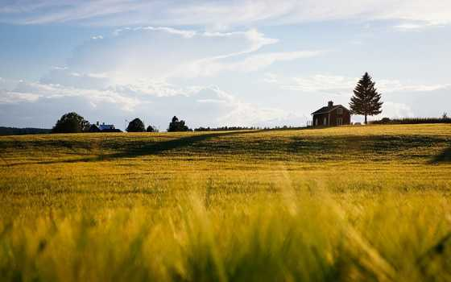
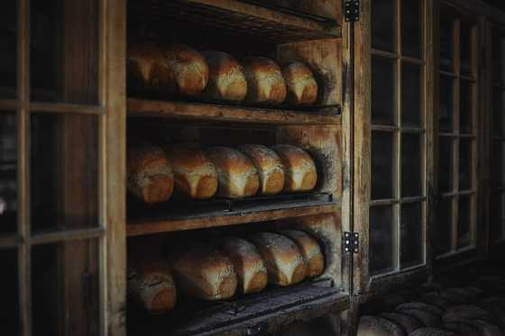
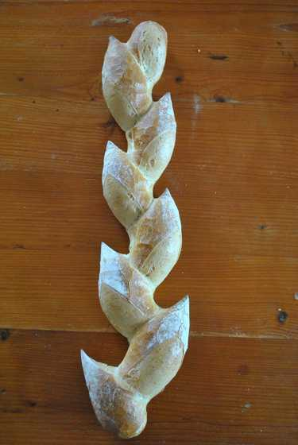
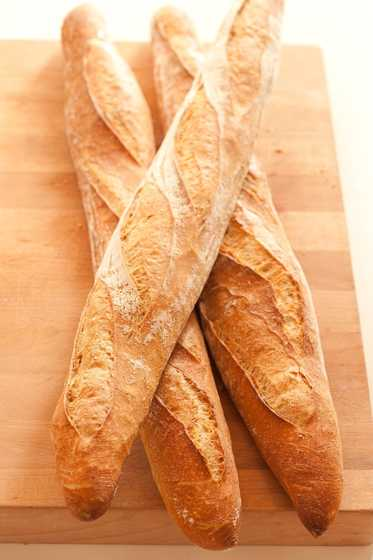
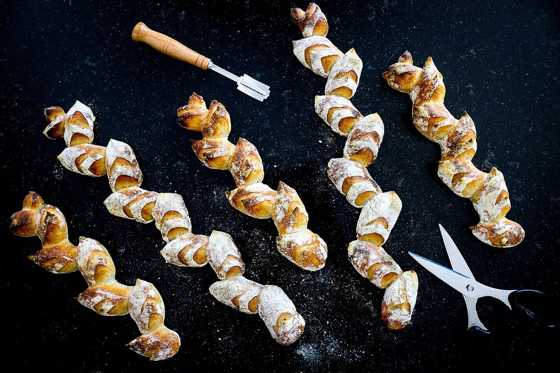
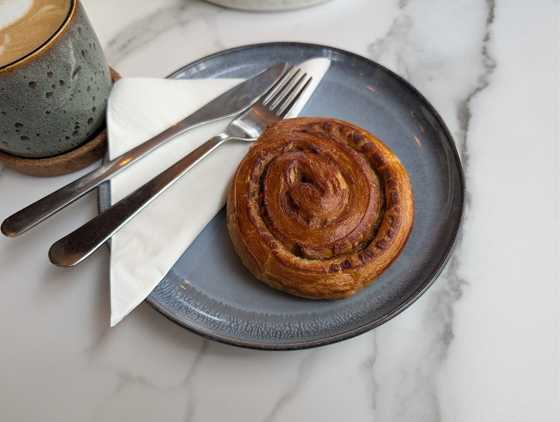
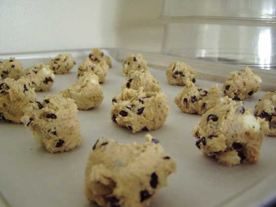
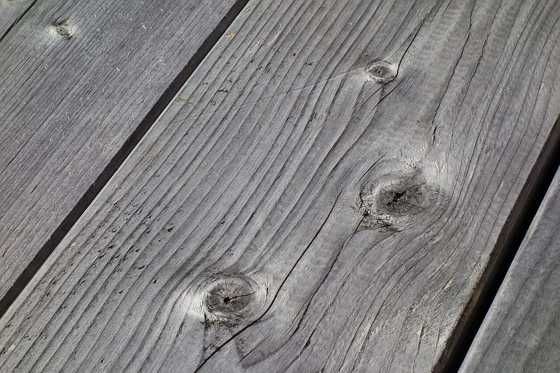
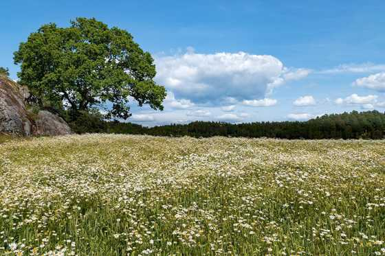
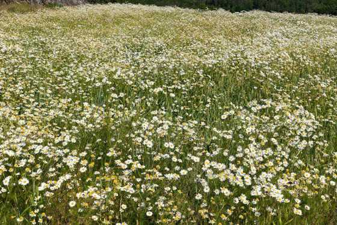

お店について
紹介記事によると、ベーカリープティールは高知市介良にある「昔ながらの地元に愛されるパン屋さん」です。菓子パン・総菜パンに加え、ハード系のパンや食パン、冷蔵ケースの洋菓子なども並ぶと紹介されています。県内のスーパーや産直市にもパンを卸しているとの情報もあります。
情報源:個人ブログの紹介記事 / 個人ブログの紹介記事 / Instagram
店名の意味や創業の経緯は確認できていないため記載していません。見出しや言い回しは制作側の表現です。
パンのいろいろ
紹介記事では、たくあんサラダのサンド、竹炭を練り込んだ食パン、レザン・オ・ノア、ミニクロワッサン、もちもちドーナツなどが挙げられていました。品ぞろえは日によって変わることがあります。価格・最新の商品は準備中(Instagramをご覧ください)。

写真:Clark Young clark1 / CC0 1.0

写真:Jberkel / CC0 1.0
写真:Herry Wibisono (herryway) / CC0 1.0

写真:jules / stonesoup / CC BY 2.0

写真:Boulanger: Nat / Photographer: Nat / CC BY-SA 4.0

写真:Andy Li / CC0 1.0

写真:Daderot / CC0 1.0

写真:awyu322 / CC BY-SA 2.0

写真:W.carter / CC0 1.0

写真:W.carter / CC0 1.0

写真:W.carter / CC0 1.0

写真:Shams948 / CC0 1.0
口コミ(イメージ例)
以下は制作側が作成したイメージ例で、実在のお客様の声ではありません。
イメージ例
朝早くから焼きたてのパンが並んでいると嬉しいですね。通勤前に立ち寄りたくなる、気取らない町のパン屋さんという印象です。
イメージ例
菓子パンも総菜パンも種類があって、選ぶのが楽しいです。ちょっと変わったサンドを見つけるとつい買ってしまいます。
イメージ例
ハード系のパンや食パンも一緒に買えるので、家族分をまとめて選べて助かります。
アクセス・お店の情報
- 店名
- ベーカリープティール
- 所在地
- 〒781-5104 高知県高知市介良320-7
- 電話
- 準備中
- 営業時間
- 準備中
- 定休日
- 準備中
- @bakery_putti_ll